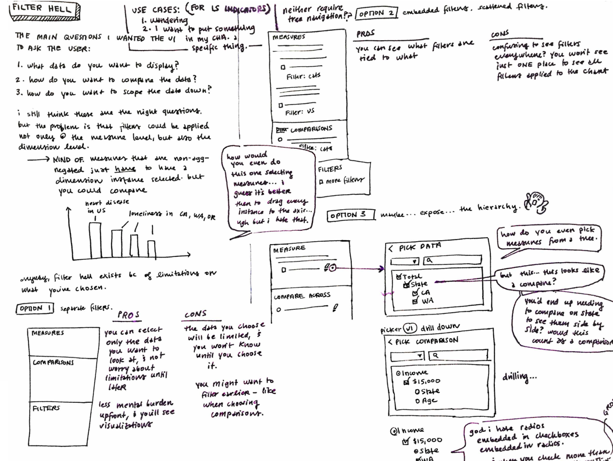
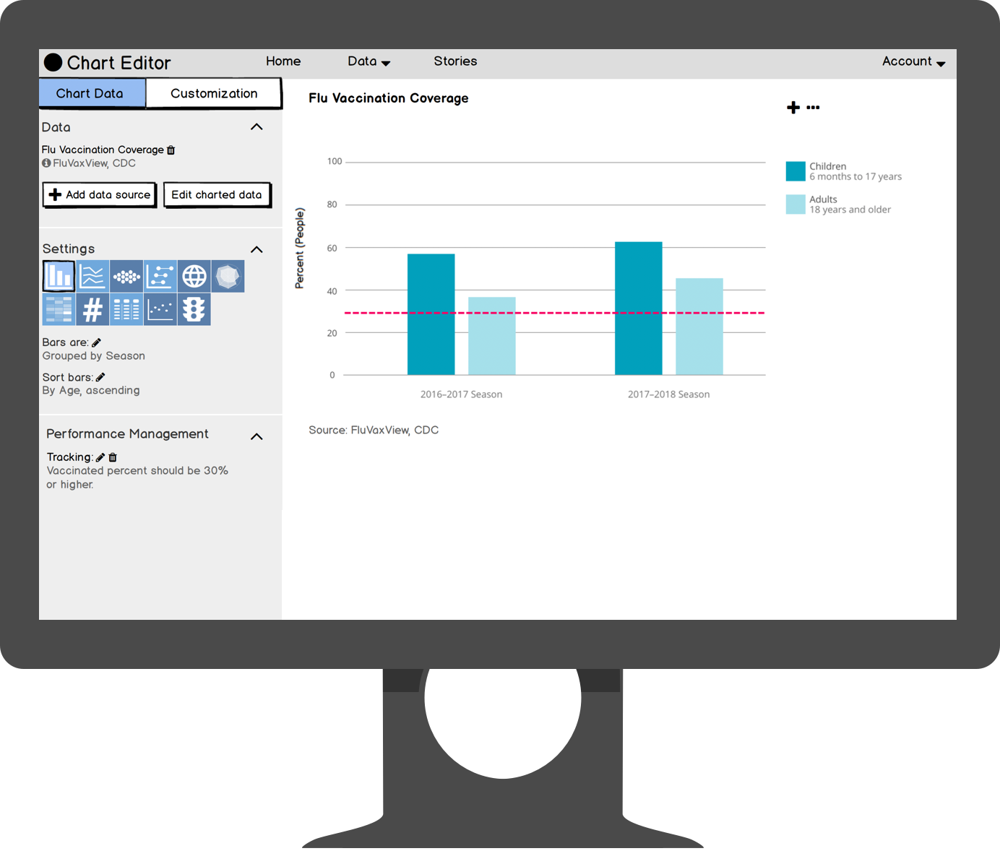
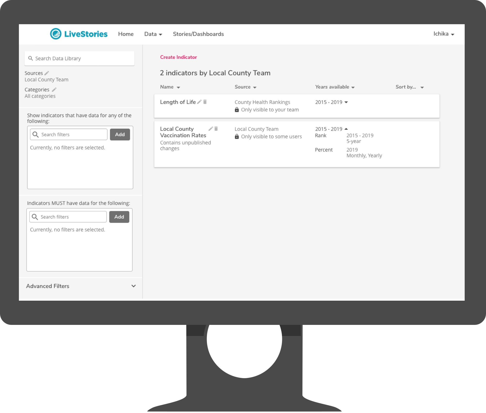

nadine aurora tabing
UX Designer & Writer based in the Pacific Northwest
LiveStories aimed to make public data about “how we live, work, and play” more accessible, especially to those who are not “data experts.”
As the company's sole designer, I owned UX design, UX research, and UI design.
Specifically, I:
- developed sketches to meet product requirements,
- owned user research, creating low-fidelity prototypes and getting direct feedback from customers,
- created high-fidelity mockups and detailed technical requirements for direct handoff to 3 development teams (2 local, 1 remote), and
- supported all engineering teams through sprint cycles, providing detail for unforeseen edge cases, and adjusting design when necessary to ensure sprint goals were met.

A banner from the LiveStories branding redesign
Visual Redesign
I selected new branding colors and worked with our marketing team to develop a new identity for LiveStories, which included new colors, a new voice, a commitment to accessibility standards, and a design system.
Colors were chosen for how they would stand out against other identities at public health conferences, as well as for how well they confirmed to WCAG 2.0.

Sample of the LiveStories design system
I redesigned the UX/UI of entire product, including overhauling the UX/UI for its website and core data visualization tools.
I incorporated colors into the design system for our product, which also included guidelines for typography, voice, and accessibility to meet customer requirements.
I also made clear stickers for our hackathon!

Stickers for participants and winners
Project: Chart Editor
The product's main challenge was: how do you make complicated health data easy to browse and understand?
Most LiveStories users are public health employees and data experts, and wanted to share their analyses with “non-experts” through compelling methods like online interactive charts. But, these data experts were less familiar with web coding, and needed a way to make charts without taking away time from their other responsibilities.
Knowledge about data science also varied between users. A concept that one user calls an “indicator” is known to another as a “dimension,” and both these concepts are not known to constituents who were the target audience of visualizations.
The design also needed to:
- Allow users to make a vast variety of huge selections, including: selecting all states, all counties in a state, all cities in a county, a state and states with similar demographics...
- Build in groundwork for future “smart” charting with the aid of data analysis
Process
I started all concepts from sketches.
A sketch for how filtering charts should work
Once I had a general idea for a feature, and feedback from the VP of Product and development teams on what parts seemed most challenging to understand and develop, I began user research.
Due to limitations with time and resources, my process for validating new features was centered on user testing with our existing customer base, using low-fidelity click-through prototypes and live builds.
Because our customers are located throughout the nation, I interacted with all customers remotely.
A screenshot of a low-fidelity prototype
Final Design
The final design for the chart editor:
- consolidated chart controls in one place (compared to an initial design that contained controls all around the chart),
- addressed complicated technical and business requirements regarding how users should be allowed to filter data, and
- fulfilled various accessibility requirements, which is important for customers that work in government.

Example interaction flow for the chart editor
Because LiveStories normalized huge amounts of public health data into a single data model, there was also the challenge of giving users a way to search for data sets.
Users had to be able to find sets with data for the proper times and locations, as well as data sets that fit specific and vast requirements. They also might only want data sets that have data for California, or data sets that excluded certain counties, or data sets that only represented data in “percent of people” rather than “percent of households,” and so on.
A screenshot of a high-fidelity mockup
I attached all interactions to metrics, and brought designs back to users to be evaluated.
The redesign was viewed by users as simpler, cleaner, and more straightforward compared to the previous designs, and to users' current charting tools. The design was viewed as most successful when organizations “just needed a chart” and didn't want to wade and perform surgery to cut and connect spreadsheets of number data just to present simple numbers to the public.